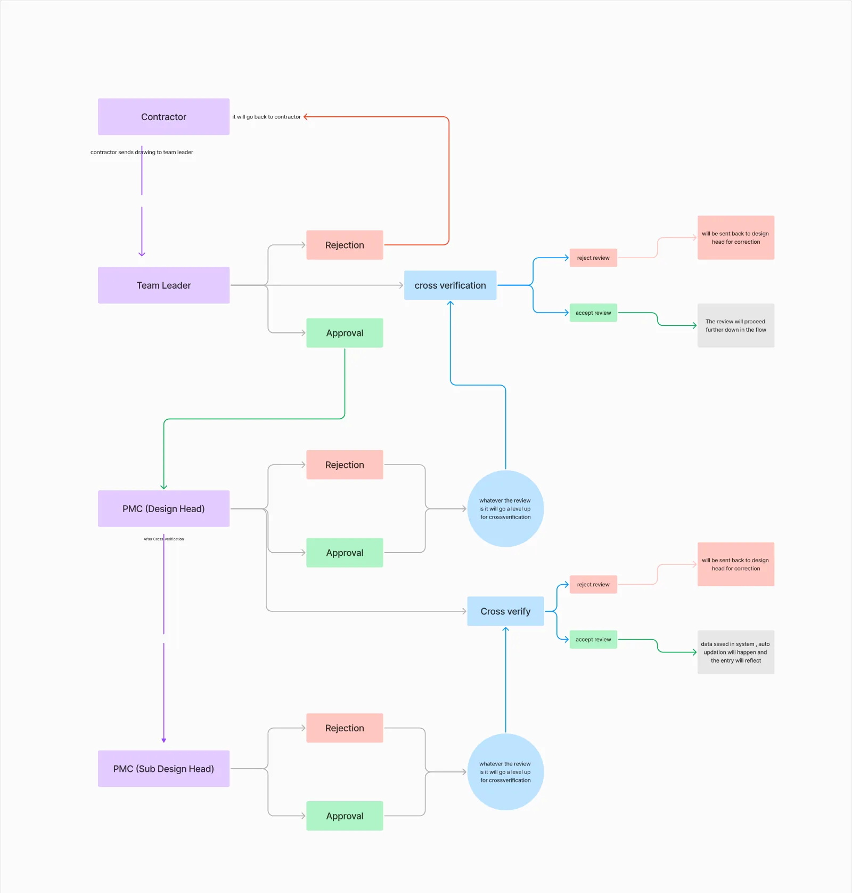
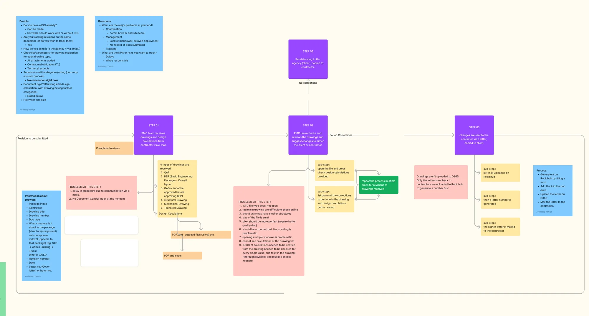
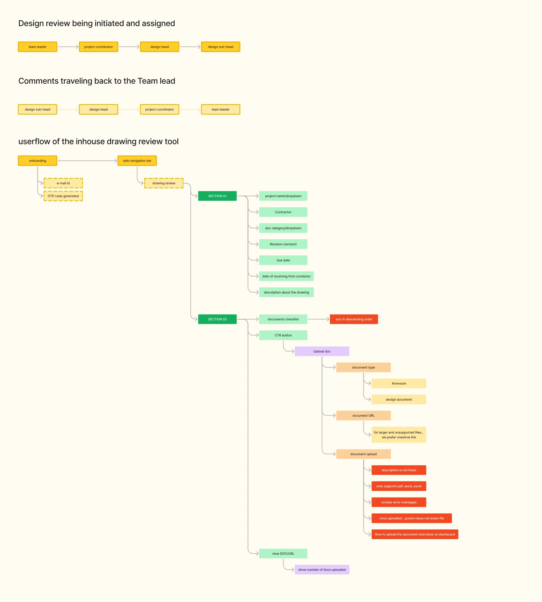
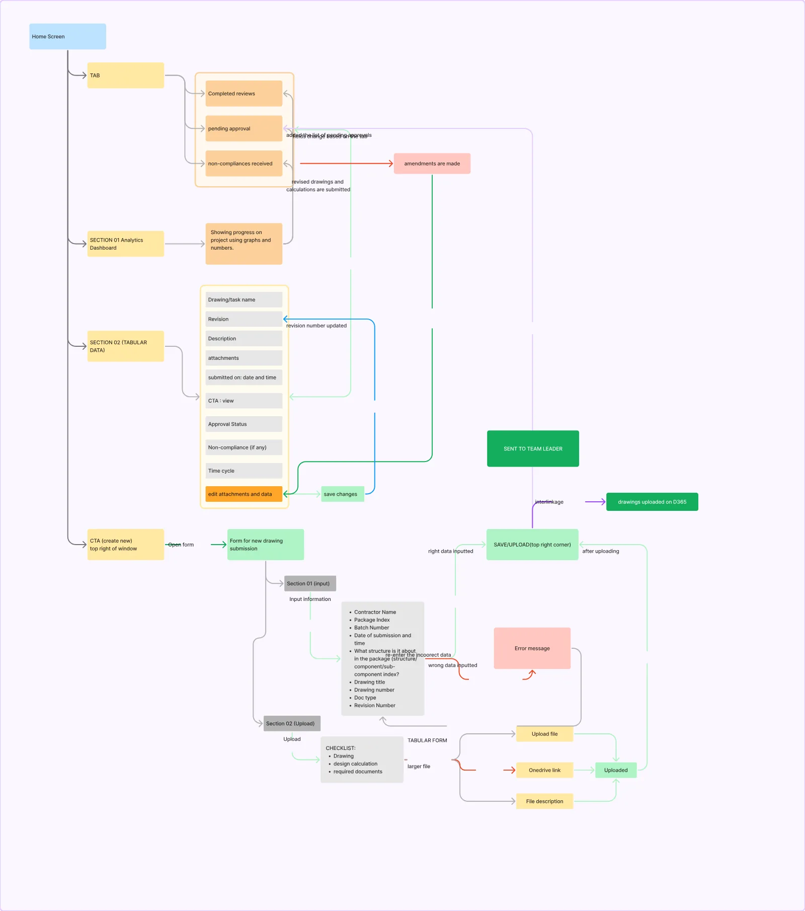
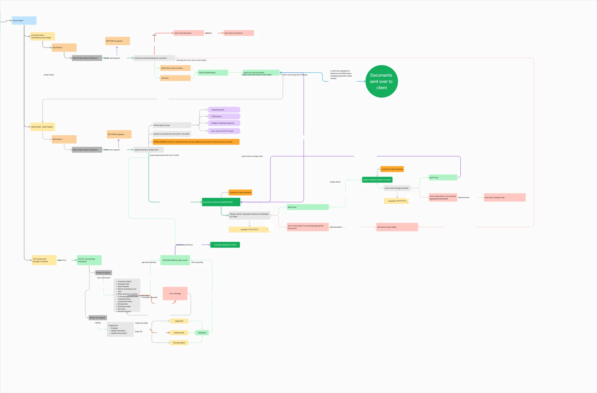
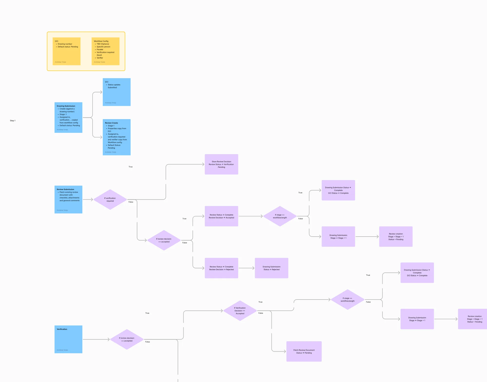

Debound · B2B SaaS for construction PMCs · UX case study
Drawing ReviewFrom email chains to one tracked review
Before a pipe is laid, its drawings and design calculations have to be approved. At the PMC we worked with, that meant contractors emailing heavy files, reviewers passing them up a chain by hand, and corrections going back as numbered letters. Nobody could say which drawing was where. I designed the tool that turns this into one submission, one configurable review flow and one record per drawing.
Read the case study
- UsersContractors, document controllers, PMC team leaders and design reviewers
- PlatformWeb app, linked to the firm's document and ERP systems
- DomainWater supply, sewage treatment and drainage packages
- My roleUX design intern: process mapping, flows, information architecture
- CompanyDebound, building software for a PMC firm
Empathize
Mapping how drawings were really reviewed, and listening to the people stuck in the middle of it.
Current process
Three steps on paper, a loop in reality
We sat with the PMC team and mapped the review exactly as it ran. On paper it's three steps. In practice step 2 repeats for every revision, and each round trip runs through email and a manual letter-numbering process.
- Step 1ReceiveThe contractor emails drawings and design calculations to the PMC. Drawings come in six types (QAP, basic engineering package, general arrangement, structural, mechanical and technical) as PDF, .std or AutoCAD files, with calculations in PDF and Excel.
- Step 2ReviewReviewers open each file and cross-check the design calculations value by value, then list every correction in a letter and an Excel sheet. A general arrangement drawing can't be approved before its basic engineering package.
- Step 3RespondCorrections go to the contractor as a letter, copied to the client. The letter is first logged on the firm's document system to get a letter number, signed, then emailed. Approved drawings go to the client the same way.

Contextual inquiry
What reviewers told us hurts
We asked the team what their biggest problems were and which risks they wanted to track. Their answers, as noted on the board:
Coordination
Head office and site teams talk through email. Reviews stall between people, and there's no record of which documents a contractor has submitted.
Manpower
Too few reviewers, deployed late. Thousands of calculations per drawing get checked by hand, value by value, across multiple revisions.
Tracking
The two risks they wanted to see: delays, and who is responsible for them. Neither was visible anywhere.
Problems with the files themselves
- .std files don't open without the desktop software
- Technical drawings are hard to check online
- Layout drawings have tiny structures, and exports are low resolution
- Zooming and scrolling across a sheet is painful
- Checking needs several windows open side by side
- The calculations behind a drawing aren't visible in the file
Audit of the in-house tool
There was a tool. It wasn't helping.
The firm had started an in-house drawing review tool. We mapped its information architecture: onboarding by email and OTP, a side navigation, and a drawing review page with a filter section and a documents checklist. Walking through it surfaced five problems, marked red on the map.
- No description field for a drawing
- Only PDF, Word and Excel uploads
- Unclear error messages
- A wrong upload can't be removed
- Slow to upload and show on the dashboard
It also showed how review responsibility moves: assigned down from team leader to project coordinator, design head and sub-head, with comments travelling back up the same chain.

Personas proto-personas, from the roles we mapped
Who touches a drawing
The contractor's submitter
Contractor's design office
"Did they get my revision? Who has it now?"
- Does
- Submits drawings and calculations, answers observations, resubmits revisions.
- Needs
- One place to submit heavy files, a live status, and the exact list of what to fix.
The team leader
PMC, owns the package
"I'm accountable for every drawing in this package, and I can't see half of them."
- Does
- Checks a submission against the contract, assigns it, sets turnaround times, makes the final recommendation.
- Needs
- A document control index, who has what, what's late, letters without the admin.
The design reviewer
PMC design head or sub-head
"Give me the drawing, the calculations and the checklist in one place."
- Does
- Reviews against a checklist per drawing type, comments, approves or rejects, verifies the level below.
- Needs
- Files that open, a checklist, previous revisions, and a clear queue.
Define
One problem, and the questions we had to answer before designing anything.
Problem statement
PMC teams review contractors' drawings over email with no index, no status and no owner, so revisions loop for weeks and nobody can tell who is causing the delay
- How might wegive every drawing one record, from first submission through every revision to approval?
- How might welet each project define its own review chain, without us hard-coding it?
- How might weturn corrections into letters automatically, numbered and filed?
Questions we settled with the team
| We asked | They said | So the design |
|---|---|---|
| Do you have a document control index (DCI)? | Not yet, but one can be made | Works with or without a DCI; creates entries if missing |
| Do you track revisions of the same document? | Yes | Revisions stack on one drawing record |
| Do you rate or categorise submissions? | No convention right now | Checklists per drawing type, no rating in v1 |
| What does a checklist cover? | All attachments, contractual obligations, technical aspects | Checklist sections in that order |
Design goals
- One recordA drawing number holds every submission, revision, review and letter.
- Configurable flowEach project sets its steps, reviewers, approvals and turnaround times.
- Visible statusEveryone sees where a drawing is, with whom, and for how long.
- No adminLetters, numbers and filing happen as a side effect of a decision.
Ideate
Designing the review chain itself, before the screens that sit on it.
The review chain
Every decision goes one level up to be cross-verified
We drew the chain as it should work. The contractor sends to the team leader. A rejection goes straight back to the contractor. An approval moves down to the design head and sub-head, and whatever a reviewer decides, the level above cross-verifies it before it counts. That kept the accountability the firm already had, and made it visible.
Routing by package and drawing type
On a real programme we mapped who reviews what: each package (water supply, sewage treatment, drainage) splits into basic engineering, general arrangement, structural, hydraulic, electrical and mechanical drawings, each with its own reviewer, its own prerequisite ("pre-requisite document clearance is critical") and its own verifier. A document controller creates the entry and picks the drawing type, and the type decides the flow.
Approval types a step can have
- One specific person
- One person, decided later
- Several compulsory approvals
- Any n people out of a list
Each step also gets a turnaround time and a checklist. The team leader sets these once per project in an admin panel, then saves the flow.
Onboarding
Two kinds of users, one front door
Staff sign in with their company email and a password they change on first login. Anyone else, mostly contractors, gets a one-time password. Everyone links a Microsoft account, because heavy drawing files travel as OneDrive links rather than uploads. A short walkthrough follows, then the flow splits: contractors land on their submissions, PMC teams on their review queue.
- Enter email
- Company domain? Password : OTP
- Link Microsoft account
- Walkthrough
- Contractor or PMC home
Prototype
Screen flows for each side, and the state logic the engineers built from.
Contractor flow
Submit once, then just watch the status
- HomeThree tabs and a dashboardCompleted reviews, pending approval and non-compliances received, over an analytics section with progress in graphs and numbers.
- TableEverything about a drawing in one rowName, revision, description, attachments, submitted on, approval status, non-compliance, time in cycle, and a View action.
- CreateA two-part formPart one: contractor, package, batch number, structure, drawing title and number, document type, revision. Part two: the checklist of required documents, each uploaded or linked from OneDrive with a description.
- ReviseFix from the non-complianceAmend, resubmit, and the revision number goes up on the same record. It goes to the team leader and is filed in the ERP automatically.

PMC flow
The team leader's day: check, assign, decide
The PMC home has the document index, controlled by the team leader, and an admin panel. A submission is first checked against the contract and its checklist. Errors go straight back to the contractor. Good submissions are assigned to a design head with a turnaround time and approval type, which emails them automatically. The design head cross-checks with the checklist and either passes it down to a sub-head or sends it back with comments, and the report travels back up to the team leader, who sends the decision out. The letter is registered and numbered in the firm's systems before it leaves.

Designing with engineering
Every button is a state change
To hand over cleanly, we wrote the flow as the state logic the backend would run: a submission creates a stage 1 review copied from the workflow config; a decision either waits for verification or completes; the last stage completes the drawing in the index; anything else creates the next stage's review.
A drawing's statuses
- Pending
- Submitted
- Verification pending
- Complete
- Pending NCR
- Archived (old revision)
- Cancelled by contractor
Raising a non-compliance and recommending a drawing both run the same automation: draft the letter, get its number, file it in the ERP and email it. That automates the most manual step of the old process.

Test
What we checked with the team, and what the tool has to prove on a live package.
Validation
Walking the team through their own process, redrawn
We took the current-process map, the review chain and the routing table back to the team to check them against real packages. The routing exercise was the stress test of the model: every drawing type on one live programme had to fit into the same parts (steps, reviewers, a prerequisite and a verifier), or the configurable flow would need exceptions.
Pilot plan targets, not results
| Task | Who | Success looks like |
|---|---|---|
| Submit a drawing with calculations and a large file | Contractor | One form, no email, OneDrive link accepted |
| Find where a submitted drawing is and who has it | Contractor, team leader | Visible in the table without asking anyone |
| Set up the review flow for a new package | Team leader | Steps, reviewers, approval type and turnaround saved once |
| Reject with observations and send the letter | Reviewer | Letter numbered, filed and emailed with no manual steps |
| Resubmit a revision | Contractor | Same record, revision number up, old one archived |
What I learned
- Map the process people actually run, not the one in the manual. The loop in step 2 was the whole problem.
- Configurability is a UX problem too. The admin panel that sets up a flow needs as much care as the flow.
- Writing the state logic with engineers caught edge cases (cancelled submissions, archived revisions) the screens alone would have missed.
Next: Construction Supervision, the product that takes over once drawings are approved.